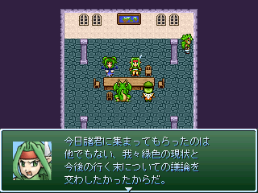
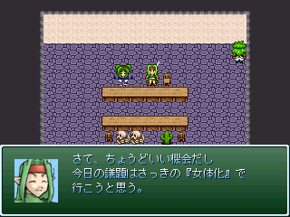
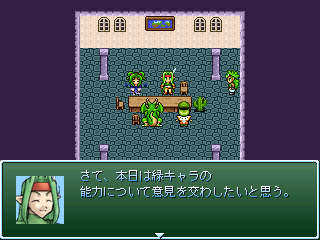
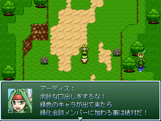
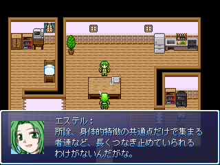
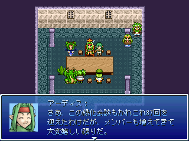
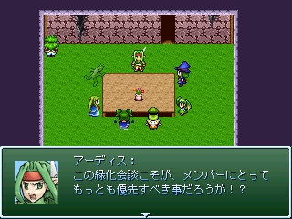

| ◆緑化委員会2010 |
|
| ◆活動紹介 |
 |
| 緑化会談 | ||
記念すべき緑化委員会の初登場作品(たぶん) 緑化委員会の理念、その根底はこの作品からひしひしと受け継がれている。 この作品を皮切りに緑色キャラの地位も徐々に向上していっている。 メンバーもこの段階では少ないものの、ここから少しずつ仲間が増えていく。 |
||
| ダウンロード(0.3MB) | ||
 |
| 第２回緑化会談 | ||
オブジェクト代表緑キャラであるサボテンが仲間入りしたぞ！ 第２回のテーマは『女体化』！ VIPツクスレに潜む不可思議な概念を究明し、 それを緑キャラの地位向上に繋げるための、我々は日夜努力を続けている！ 次々に現れる新たな謎、立ちふさがる壁、 だが俺たちは諦めない！緑キャラの地位が向上し、主役を勝ち取るその日まで！ |
||
| ダウンロード(0.2MB) | ||
 |
| 第三回緑化会談 | ||
第三回のテーマは『能力』！ 多くのキャラクターが溢れるVIPツクスレの中で、 突出した個性を身につけていることは非常に大きなアドバンテージを持つ！ そこで我々は自分たちの持っている潜在能力について話し合うことにした！ そしてその能力を使い、魔王軍に立ち向かうのであった！ |
||
| ダウンロード(0.7MB) | ||
| はにょう８ | ||
ＲＴＰ大陸で突如勃発した大戦争！ 各勢力が入り乱れて戦うが、もちろん緑化委員会も参戦している！ ただし勢力選択リストからは選択できない隠し勢力扱い 各勢力や在野に散らばっているメンバーを集めることでイベント発生！ 表向きには変化がないが、勢力名が心の中で「緑化委員会」に変更されるのだ！ SSが無いのはその…間に合わなかったとかじゃなくてだな！ セーブファイルごと消してたんでもなくて……その……察しろッ！！ |
||
| ダウンロード(10.4MB) / はにょう8攻略wiki | ||
 |
| たまにはトリッシュの事思い出して下さい | ||
トリッシュのこと、みんな思い出してやってくれ！ 今回は知恵子を勧誘する話だ！ |
||
| ダウンロード(2.1MB) | ||
 |
| もしもエステルが家に来たら | ||
ある日、家に帰ったらエステルがいた…… 別にこれ緑化委員会の活動じゃないよな？ |
||
| ダウンロード(0.6MB) | ||
 |
| 緑サイドの捜査日 | ||
第87回緑化会談！ 今回は新メンバー、イングリッド君を迎えてのお話だ！ |
||
| ダウンロード(0.6MB) | ||
 |
| もしもアーディスがハーレムに気付いたら | ||
もしかして緑化委員会ってハーレムなんじゃね？うはｗｗｗｗｗおｋｗｗｗｗｗｗ |
||
| ダウンロード(0.6MB) | ||
| ◆ vipkohaku2010-green森yahoo.co.jp |